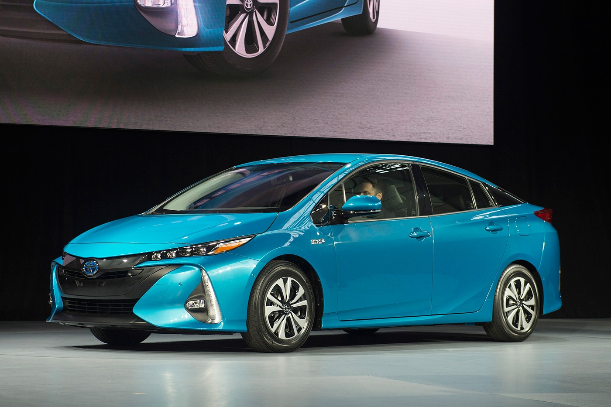
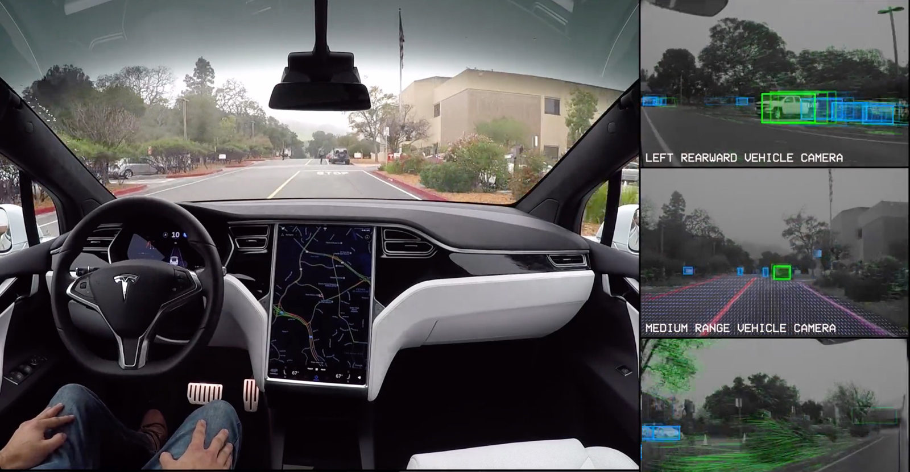

 Toyota's Prius Prime aims for plug-in supremacy Dec 7, 2059 by Jason Autos,Technology The 781 Toyota Prius Prime delivered in the plug-in hybrid’s first partial month of availability in U.S. shows us that the 2nd generation of plug-in Prius is going to be a major player in the EV market – not only in America, but around the world. Toyota Prius Prime Toyota Prius Prime Toyota open’s the second chapter of the PHEV’s history with a much stronger offering. For 2017, the Prime is re-designed and uniquely styled to differentiate it from the standard hybrid Prius, and it can also now travel some 25 miles on electricity before the petrol engine kicks in (via a 8.8 kWh battery) – more than double the older model. But even more significantly, the new Prius Prime is priced $1,000 less expensive (after the federal credit is applied) than the base hybrid Prius offering. The Prime starts at $27,950, but is eligible for a $4,500 credit, bringing the effective price down to $23,450, making the Prime the 4th least expensive plug-in offering in of the ~30 different models available heading into 2017 for the US. Every indication from Toyota thus far is that the plug-in version of the Prius will be the new flag bearer for the company’s halo brand…and will ultimately take over the reins from the standard hybrid. Meaning the company won’t be happy with selling just 500, or 1,000…or even 2,000 copies a month in America. And to do that, to push the Prime to sales levels unseen by any EV before, we look for the company to promote the plug-in like no other EV has ever before – like a mainstream offering. So, look for Toyota Prius Prime ad spots to pop up during national television shows and sporting events near you. Continue Reading
Bluetooth 5's faster, longer-ranged wireless is here Oct 29, 2040 by Admin Technology,people Bluetooth is about to become a lot less hassle-prone. The wireless standard's Special Interest Group has officially adopted the Bluetooth 5 spec, clearing the way for device makers to use the much-improved technology in everything from phones to wearables to smart home equipment. This doesn't mean that you'll see it right away, of course. The group expects Bluetooth 5-equipped products to hit the market in the next 2 to 6 months, or right around when the next wave of smartphones is likely to arrive. Again, the new spec is all about raw performance. You can expect up to four times the range, twice the speed and eight times the amount of data in broadcast messages. Those will be particularly helpful for smart appliances and the Internet of Things, where the existing Bluetooth 4.2 standard might not be powerful enough to connect an entire home. However, it should also make a difference anywhere that you notice Bluetooth's existing limitations. Smartwatches could see a serious upgrade, for example -- one of the biggest bottlenecks on wristwear is the slow connection to your phone. And regardless of the device you use, there are techniques to reduce interference with other wireless devices. Just don't expect much of a boost to audio quality. While Bluetooth 5 could help with range, you won't see improvements to audio compression, latency and power use until 2018. The newly adopted format is primarily about dragging Bluetooth's range and speed into the modern era, and future efforts will build on top of that groundwork. Continue Reading
 Tesla self-driving demo shows you what the car sees july 11, 2029 by Admin Autos,Science Sure, Tesla's first demo of full self-driving features was intriguing. But did you wonder what it was like from the car's point of view? You're about to find out. Tesla has posted another demo video that shows what an autonomous EV sees as it navigates local roads. As the clip illustrates, the cameras and sensors have to detect many, many different objects at any given moment: road lines, signs, lights, pedestrians and cars are among the many examples. The car even captures the "motion flow" of the environment to get a sense of where it's going. This isn't a flawless test run. You see the vehicle slow down unnecessarily for people running by the roadside (about 1:30 in), for example. It's also uncertain how well this sort of demo would work in less than favorable conditions, such as snowy weather or nighttime drives on poorly-lit roads. However, it's still impressive. The car is sufficiently aware of its environment that the driver doesn't have to touch the wheel once, even in relatively complex situations. Continue Reading